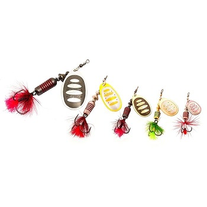

Блесна Pontoon21

Описание товара:
Блесна Pontoon21 вращающаяся SYNCHRONY, #3.5, #T01-071
Характеристики товара:
Цвет: золотой, белый, оранжевый, красный, желтый
Вес: 11.4 г
Длина: 7,5 см
Бренд: Pontoon21
Подробное описание товара:
Особенности, выделяющие вращающиеся блёсны Pontoon21® среди всех других: - двусторонняя реверсивная окраска лепестка,
создающая при его вращении эффект стабильного объёмного изображения, привлекающий и фокусирующий внимание рыбы под
ЛЮБЫМ УГЛОМ ОБЗОРА И АТАКИ; - идеальная сбалансированность всех комплектующих на основе тщательного расчёта формы,
удельной плотности металла, глубины штамповки лепестка и даже диаметра и упругости проволоки. Блёсны Pontoon21 ®
отличаются надёжностью вращения без паразитных биений при движении как на течении, так и в стоячей воде. Все модели
начинают вращение сразу, без задержки, характерной для данного вида приманок, даже на минимальной скорости проводки;
- надёжный тройник с опушкой из качественного материала, гармонирующего с окраской лепестка. Опушка фокусирует
внимание хищника, снижая число промахов при атаке, служит камуфляжем для тройника, а также дополнительной
балансировкой конструкции в горизонтальном положении. Примечание: вращающиеся блесны Pontoon21® сохраняют прекрасную
центровку и при «голом» тройнике, что не раз доказано успехами победителей и призёров национальных и международных
рыболовных соревнований, где опушенные тройники не разрешены. Лепесток серии Synchrony создан на основе классической
формы French Type (встречаются и другие названия). Такие блёсны имеют небольшое лобовое сопротивление с углом
раскрытия лепестка при вращении менее 45⁰. Пропорции лепестка адаптированы в соответствии с характеристиками металла,
а также формой сердечника, утолщающегося в передней части, что несколько смещает центр тяжести в головную часть,
придавая блесне дополнительную устойчивость. Аналогичную роль выполняют и канавки на сердечнике. Стальные шарики и
конус-отражатель являются своеобразными «подшипниками», обеспечивающими лепестку свободу вращения. Той же цели служит
и конструкция дужки из жёсткой, устойчивой к деформации проволоки с расплющенными краями для отверстий. Примечание: В
серии реализованы промежуточные размеры (#1.5; #2.5; #3.5), в которых лепестки имеют другие пропорции и площадь. В
результате их лобовое сопротивление и угол вращения снижены, что расширяет условия их применения на более сильном
течении.
Все права защищены